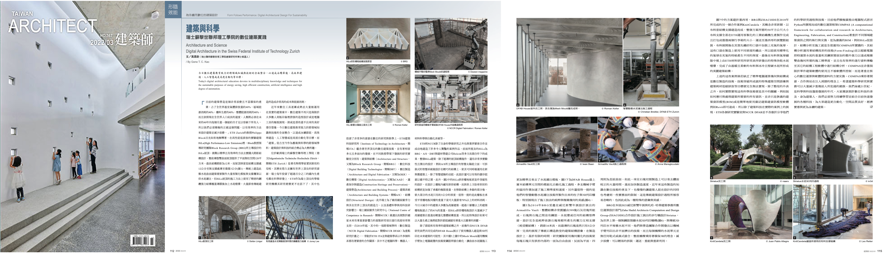
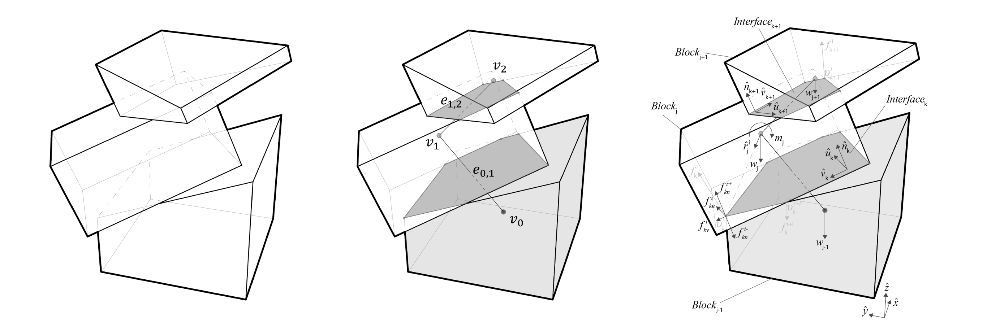
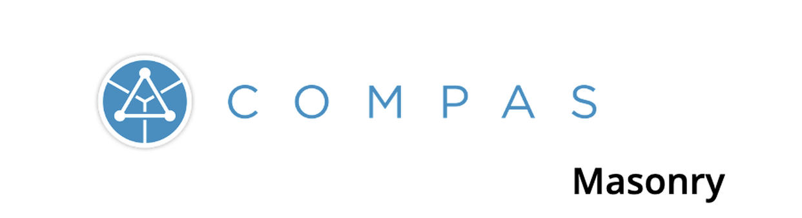
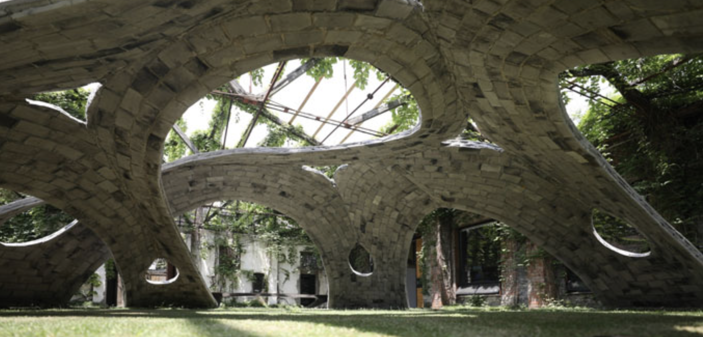
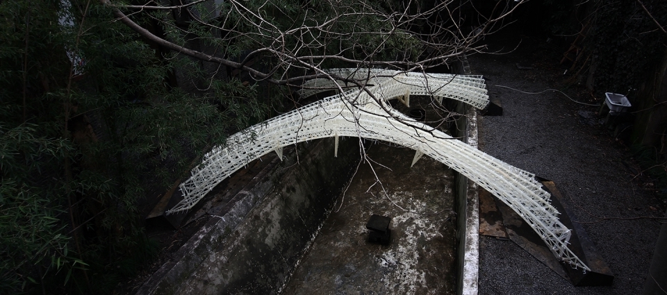
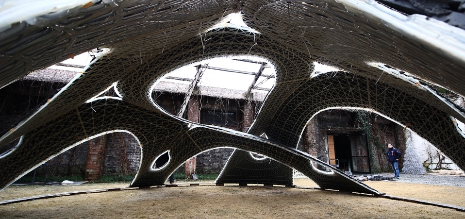
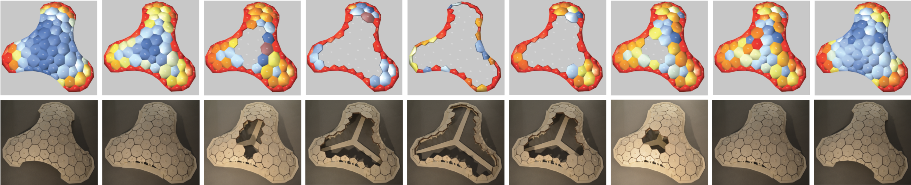

2022
Coupled Rigid-Block Analysis: Stability-Aware Design of Complex Discrete-Element Assemblies

Kao, Gene Ting-Chun, Antonino Iannuzzo, Bernhard Thomaszewski, Stelian Coros, Tom Van Mele, and Philippe Block. "Coupled Rigid-Block Analysis: Stability-Aware Design of Complex Discrete-Element Assemblies." Computer-Aided Design 146 (2022): 103216.
A computational design pipeline of 3D discrete-element assemblies in architecture
Kao, Gene Ting-Chun, Francesco Ranaudo, Antonino Iannuzzo, Stelian Coros, Tom Van Mele, and Philippe Block. "A computational design pipeline of 3D discrete-element assemblies in architecture." In Proceedings of the 2022 European Congress on Computational Methods in Applied Sciences and Engineering (ECCOMAS), Oslo 2022. abstract accepted.
建築與科學 - 瑞士蘇黎世聯邦理工學院的數位建築實踐 Architecture and Science - Digital Architecture in the Swiss Federal Institute of Technology Zurich

Kao, Gene Ting-Chun "Architecture and Science - Digital Architecture in the Swiss Federal Institute of Technology Zurich." In Taiwan Architect 567 (2022): 112-115.
2021
Understanding rigid-block equilibrium method via mathematical programming

Kao, Gene Ting-Chun, Antonino Iannuzzo, Stelian Coros, Tom Van Mele, and Philippe Block. "Understanding the rigid-block equilibrium method by way of mathematical programming." Proceedings of the Institution of Civil Engineers-Engineering and Computational Mechanics 174, no. 4 (2021): 178-192.
COMPAS Masonry: a computational framework for practical assessment of unreinforced masonry structures

Iannuzzo, Antonino, Alessandro Dell’Endice, Ricardo Maia Avelino, Gene Ting-Chun Kao, Tom Van Mele, and Philippe Block. "COMPAS masonry: a computational framework for practical assessment of unreinforced masonry structures." In Proceedings of the SAHC Symposium. 2021.
2020
3d-printed bending-active formwork for shell structures

Wang, Xiang, Kam-Ming Mark Tam, Alexandre Beaudouin-Mackay, Benjamin Hoyle, Molly Mason, Zhe Guo, Weizhe Gao et al. "3d-Printed Bending-Active Formwork for Shell Structures." In Architectural Intelligence, pp. 295-314. Springer, Singapore, 2020.
2019
High-performance corrugated concrete shell construction on bending-actuated robotically 3D-printed formworks

Wang, Xiang, Kam-Ming Mark Tam, Dalma Földesi, Hyerin Lee, Jung In Seo, Anna Vasileiou, Youyuan Luo et al. "High-Performance Corrugated Concrete Shell Construction on Bending-actuated Robotically 3D-printed Formworks." In Proceedings of IASS Annual Symposia, vol. 2019, no. 6, pp. 1-8. International Association for Shell and Spatial Structures (IASS), 2019.
Tile-vault construction on bending-actuated robotically 3D-printed formwork

Wang, Xiang, Kam-Ming Mark Tam, Alexandre Beaudouin-Mackay, Benjamin Hoyle, Molly Mason, Zhe Guo, Weizhe Gao et al. "Tile-vault construction on bending-actuated robotically 3D-printed formwork" In Proceedings of the IASS Symposium 2019, Barcelona, 2019.
2017
Assembly-aware design of masonry shell structures: a computational approach

Kao, Gene TC, Axel Körner, Daniel Sonntag, Long Nguyen, Achim Menges, and Jan Knippers. "Assembly-aware design of masonry shell structures: a computational approach." In Proceedings of IASS Annual Symposia, vol. 2017, no. 23, pp. 1-10. International Association for Shell and Spatial Structures (IASS), 2017.